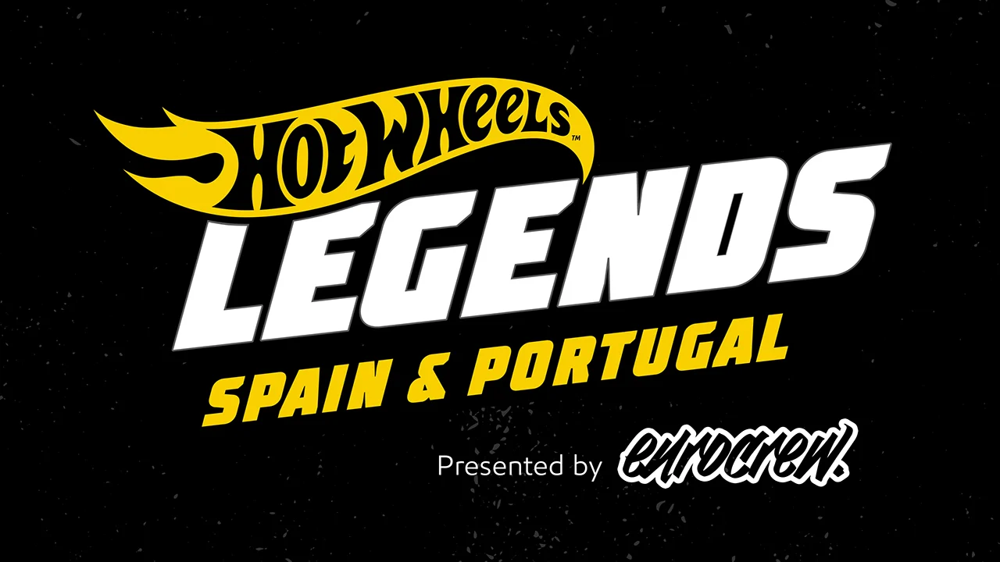
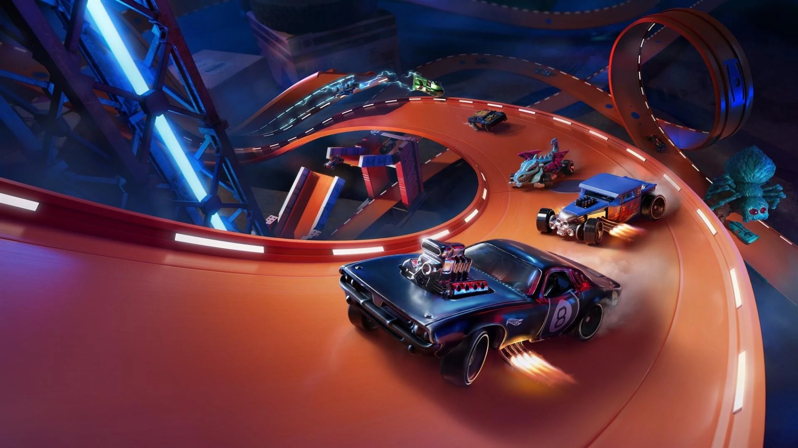

Confira os novos Eventos
Em 2018 a Mattel teve uma ótima idéia: produzir miniaturas de carros reais de pessoas reais, desde que eles tivessem a “cara” da Hot Wheels, ou seja, carros fora do comum que esbanjem potência e estilo. Para isso, a equipe de designers da marca saiu em viagem por vários estados americanos em eventos que aconteciam (e acontecem) geralmente em estacionamentos de grandes lojas do Walmart (seu maior parceiro comercial) com um concurso para descobrir o próximo carro da marca!
Esses grandes eventos tem uma enorme participação de famílias, de malucos por carros e de colecionadores em geral, além de um inacreditável contingente de carros modificados de cair o queixo. Apesar da dificílima tarefa de eleger um carro especial para se tornar um Hot Wheels, os designers e demais jurados conseguiram escolher o 2 Jet Z - vencedor de 2018 (saiba de toda sua história neste link), o The Nash - vencedor de 2019 (veja fotos dele aqui) e o Custom 1970 Pontiac Trans Am que venceu o concurso em 2020 e que se tornará um Hot Wheels na linha básica de 2022 (veja a foto do protótipo neste link).
Hot Wheels® chega à Portugal! Para esta parada, o Legends Tour veio para provar o talento de fabricação regional. Centenas de veículos saíram, desde os lowriders mais baixos até um antigo Chrysler em cima de um chassi de caminhão monstro. Cada um veio para competir para se tornar a próxima lenda - e ser transformado em um modelo oficial em escala 1/64. Qual desses carros ridiculamente selvagens irá para a grande final ?
Hotwheels Unleashed
Hot Wheels Unleashed é um jogo eletrônico de corrida desenvolvido e publicado pela Milestone. Fazendo parte da série Hot Wheels, o jogo foi lançado em 30 de setembro de 2021 para Microsoft Windows, Nintendo Switch, PlayStation 4, PlayStation 5, Xbox One e Xbox Series X/S.